<!doctype html>
<html lang="en">
    <head>
        <meta charset="utf-8">
        <title>What OpenLayers can do for you? Usages and ecosystem - Thomas Gratier - WebGeoDataVore</title>
        <link rel="stylesheet" href="css/reveal.css">
        <link rel="stylesheet" href="theme/my-custom.css" id="theme">
        <!-- For syntax highlighting -->
        <link rel="stylesheet" href="lib/css/zenburn.css">

        <!-- If the query includes 'print-pdf', use the PDF print sheet -->
        <script>
          document.write( '<link rel="stylesheet" href="css/print/' + ( window.location.search.match( /print-pdf/gi ) ? 'pdf' : 'paper' ) + '.css" type="text/css" media="print">' );
        </script>
    </head>
    <body>

        <div class="reveal">
            <div class="slides"><section  data-markdown><script type="text/template">## What OpenLayers can do for you? Usages and ecosystem

par [@ThomasG77](https://twitter.com/ThomasG77),
[WebGeoDataVore](http://webgeodatavore.com)


</script></section><section  data-markdown><script type="text/template">
# Who I Am?

Freelance GIS Expert, doing also OpenData and data visualisation, based in France<br>
My activities are consultancy, training and on-demand development.

I wrote a book on [OpenLayers 3](https://www.packtpub.com/web-development/openlayers-3-beginner%E2%80%99s-guide)

I mainly develop with JavaScript and Python.
</script></section><section  data-markdown><script type="text/template">
# OpenLayers in short


OpenLayers 3 is a JavaScript library for online mapping, release under [BSD
2-Clause](https://tldrlegal.com/license/bsd-2-clause-license-(freebsd) license.

Its philosophy could be describe as follow:

> *Maintain a core with extended functionalities with the choice to remove unused library parts depending of your application code.* <br>

This is possible using Google Closure Compiler.
</script></section><section ><section data-markdown><script type="text/template">
# OpenLayers 3 choice: the 80/20 rule
</script></section><section data-markdown><script type="text/template">
There are many other choices to do web mapping, in particular the strong contender [Leaflet](http://leafletjs.com)

### You are in the 80% requirements.

In our opinion, as long as your don't meet advanced requirement like projections, canvas rotation or need to consume OGC web services (for SDI for example), you can choose the approach light library "à la Leaflet" with plugins.
</script></section><section data-markdown><script type="text/template">
### If you need more than the 80% to achieve your requirements.

If you need a lot of advanced functions without the third party plugins code quality variations, choose OpenLayers 3 as the features coverage is larger than Leaflet with it philosophy of a well maintained small core.

If you are not sure about the requirements you will have, you may prefer OpenLayers to limit the risk to switch later.

No opposition between both OpenLayers and Leaflet libraries: this vision is shared by companies or web mapping agencies that nowadays support both OpenLayers 3 and Leaflet clients.
</script></section></section><section  data-markdown><script type="text/template">
# Usages - the three pillars

## Displaying

## Interacting

## Processing
</script></section><section ><section data-markdown><script type="text/template">
# Displaying
</script></section><section data-markdown><script type="text/template">
## Different data sources - WMS

<a href="http://mapshup.com/projects/rocket/#/search?collection=Pleiades&page=1&_view=map&q=southampton,%20uk&_center=-144375,6591523.4375,10">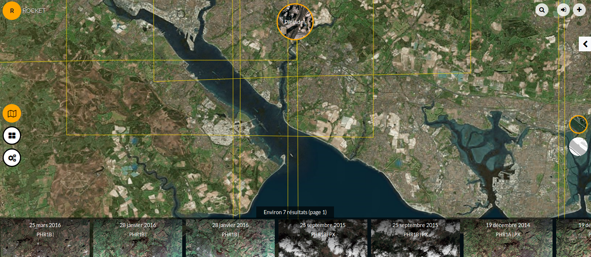</a>
</script></section><section data-markdown><script type="text/template">
## Different data sources - OpenStreetMap tile based sources

<a href="http://openlayers.org/en/master/examples/stamen.html">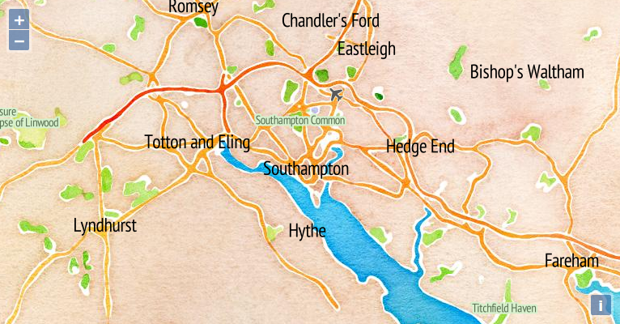</a>
</script></section><section data-markdown><script type="text/template">
## Different data sources - GeoJSON

<a href="http://openlayers.org/en/master/examples/sphere-mollweide.html"></a>
</script></section><section data-markdown><script type="text/template">
## Different data sources - Mapbox Vector Tiles

<a href="http://stvno.github.io/page/cbsexplorerol/index.html">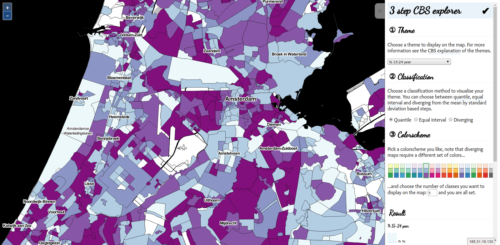</a>
</script></section><section data-markdown><script type="text/template">
## Client-side reprojection

<a href="http://openlayers.org/en/master/examples/reprojection-by-code.html"></a>
</script></section><section data-markdown><script type="text/template">
## Maps or not?

### High-resolution images viewer

<a href="http://klokantech.github.io/iiifviewer/">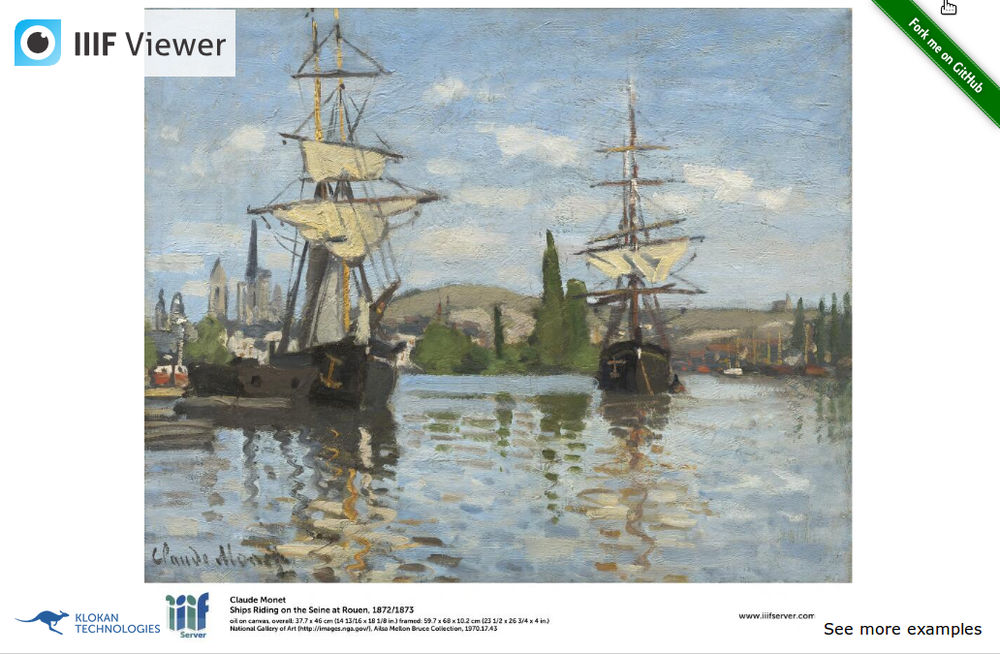</a>

See also the [Zoomify demo](http://openlayers.org/en/master/examples/zoomify.html)
</script></section><section data-markdown><script type="text/template">
## Overlay or side by side?

### National Library of Scotland

<a href="http://maps.nls.uk/geo/explore/sidebysideswipe.cfm#zoom=10&lat=50.9143&lon=-1.5875&layers=1&right=BingHyb">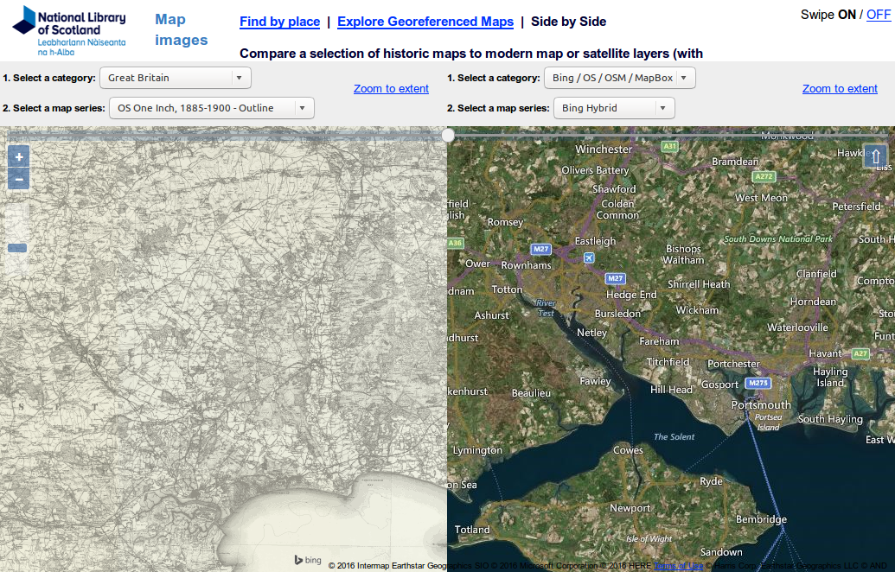</a>
</script></section><section data-markdown><script type="text/template">
## Styling - client-side

<a href="http://openlayers.org/en/master/examples/mapbox-vector-tiles-advanced.html">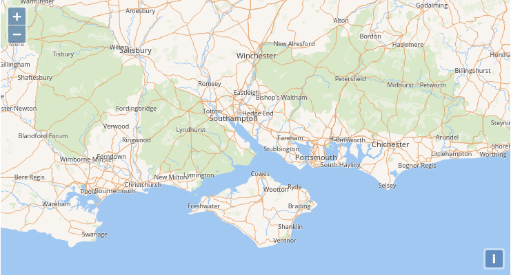</a>
</script></section><section data-markdown><script type="text/template">
## Styling - multiple styles for a layer

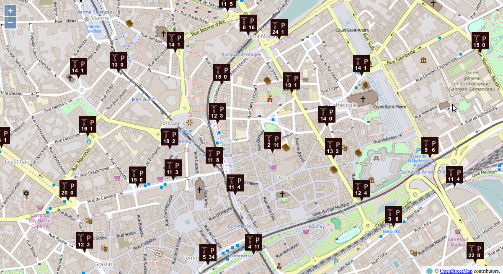
</script></section><section data-markdown><script type="text/template">
## Alternative representations - advanced clustering

<a href="http://viglino.github.io/OL3-AnimatedCluster/">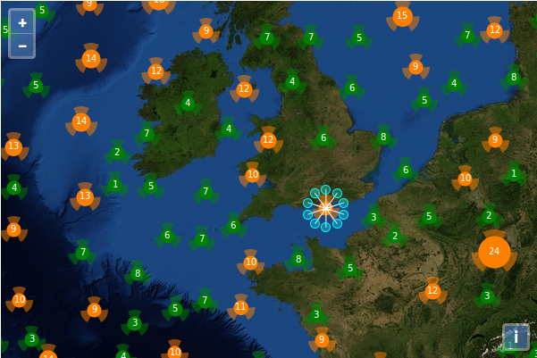</a>
</script></section><section data-markdown><script type="text/template">
## Multiple views & renderers

<a href="http://openlayers.org/en/master/examples/side-by-side.html">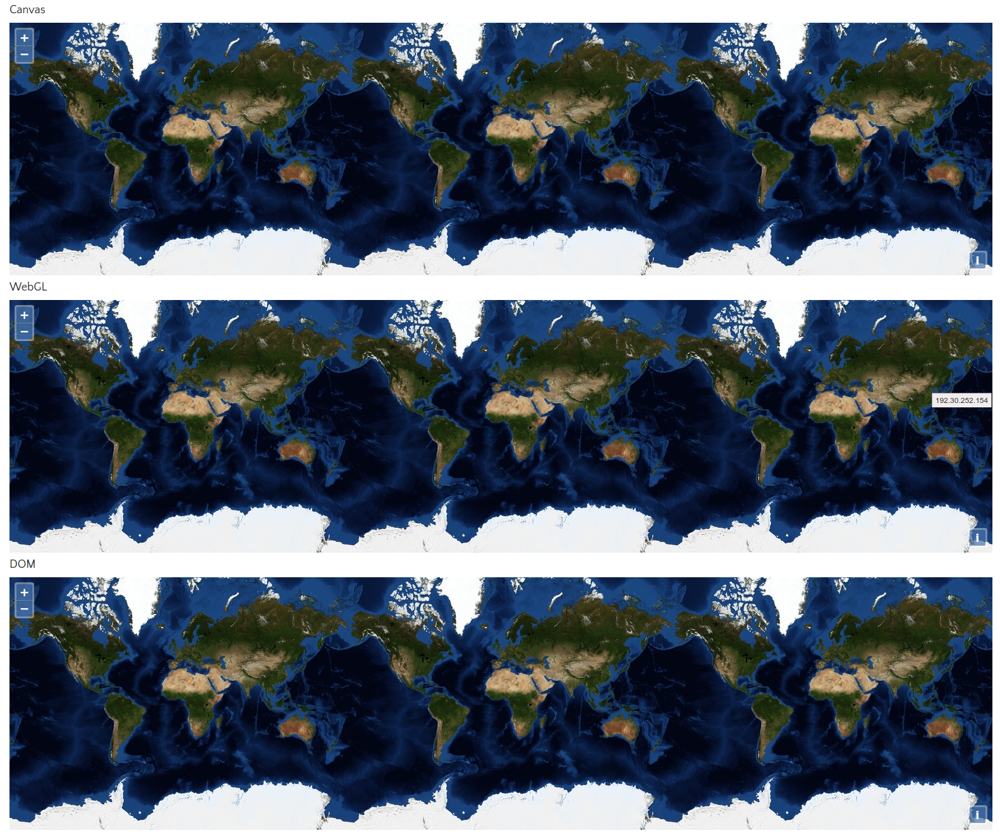</a>

Default Canvas renderer. Drawback: the most interesting renderer, WebGL, does not support all vector types. Funding wanted!
</script></section><section data-markdown><script type="text/template">
## 2D/3D combined with Cesium

[](https://map.geo.admin.ch)

See the [OpenLayers-Cesium project](http://openlayers.org/ol3-cesium/)
</script></section></section><section ><section data-markdown><script type="text/template">
# Interacting
</script></section><section data-markdown><script type="text/template">
## Interacting

Although interactions can concern zooming, panning, keyboard manipulation and mouse/touch related behaviour, we will focus on querying informations from layers and drawing here.
</script></section><section data-markdown><script type="text/template">
## Querying: the options

* Client-side vector

* Server-side vector with WFS

* WMS with GetFeatureInfo

* UTF-Grid
</script></section><section data-markdown><script type="text/template">
## Client-side vector

<a href="http://wilson.boundlessps.com:8080/BoulderCountyFloods2013/">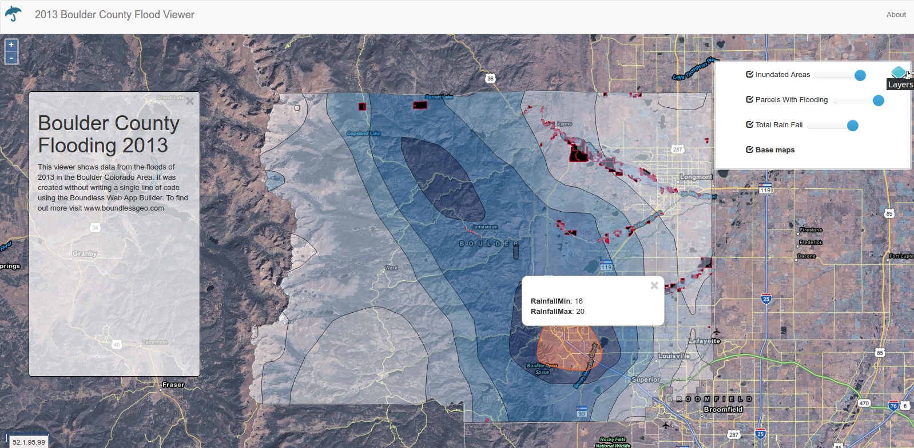</a>

It uses `forEachFeatureAtPixel` (from `ol.Map`). See [associated demo](http://openlayers.org/en/master/examples/kml-timezones.html)
</script></section><section data-markdown><script type="text/template">
## Server-side vector with WFS

<a href="http://openlayers.org/en/master/examples/vector-wfs-getfeature.html">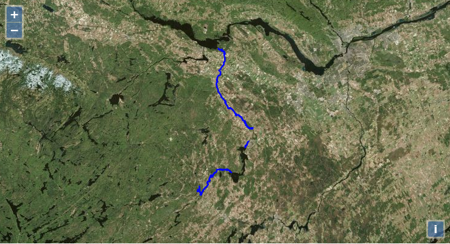</a>

You pass filter encoding string in the GET or POST URL
</script></section><section data-markdown><script type="text/template">
## WMS with GetFeatureInfo

<a href="http://mapstore2.geo-solutions.it/mapstore/#/viewer/openlayers/0?_k=wzmazu"></a>

Use `forEachLayerAtPixel` (from `ol.Map`) combined with `getGetFeatureInfoUrl` (from `ol.source.ImageWMS` or `ol.source.TileWMS`) See [associated demo](http://openlayers.org/en/master/examples/getfeatureinfo-image.html)
</script></section><section data-markdown><script type="text/template">
## UTFGrid - population census

[](http://datashine.org.uk)

Look at class `ol.source.TileUTFGrid` and [associated demo](http://openlayers.org/en/master/examples/tileutfgrid.html)
</script></section><section data-markdown><script type="text/template">
## Display element on the top of your map

<a href="demos/overlay-simple.html">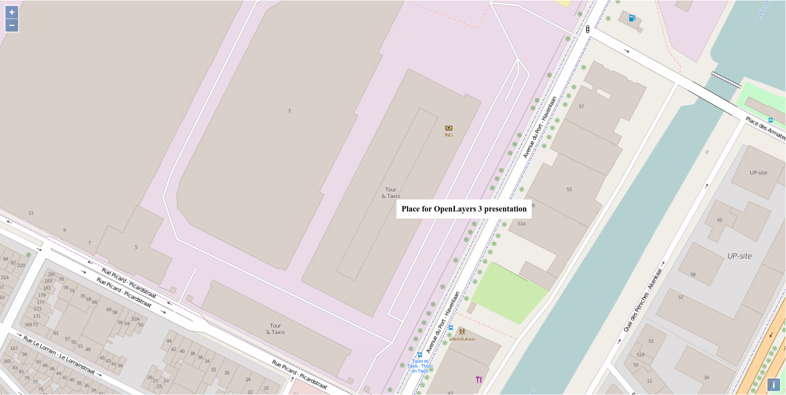</a>

You will need an Overlay (`ol.Overlay`). It position changes depending of geographical coordinates.
</script></section><section data-markdown><script type="text/template">
## Selecting

### To draw and select

<a href="https://rawgit.com/webgeodatavore/ol3-extras-demos/master/select-jsts/select-advanced.html">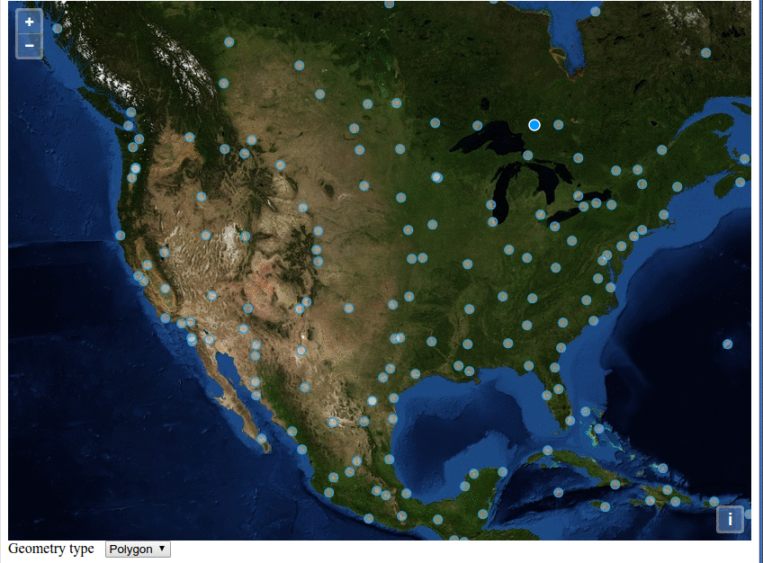</a>
</script></section><section data-markdown><script type="text/template">
## Drawing/modifying

<a href="https://cdn.rawgit.com/HamHamFonFon/ol3-drawButtons/master/examples/basic_use.html">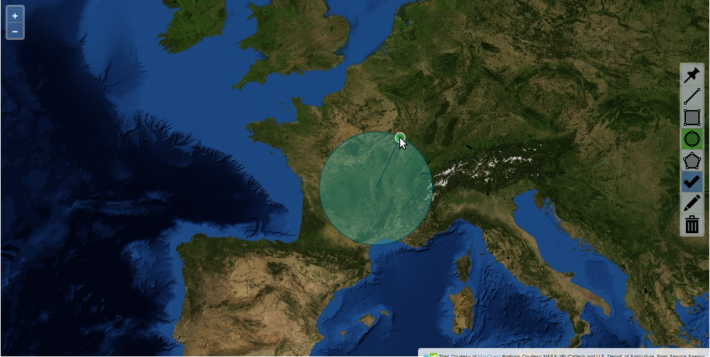</a>
</script></section></section><section ><section data-markdown><script type="text/template">
# Processing
</script></section><section data-markdown><script type="text/template">
## Raster processing

### Pseudo-3D view for shaded relief

[](http://elasticterrain.xyz)
</script></section><section data-markdown><script type="text/template">
## Raster processing

### Satellite-image diff in the browser

<a href="https://www.youtube.com/watch?v=XxFiaVpaYP0">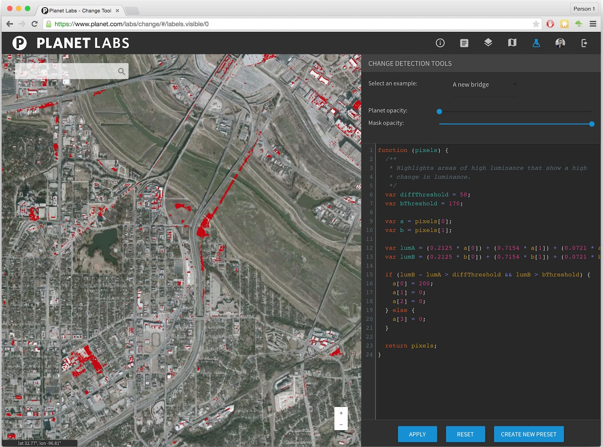</a>
</script></section><section data-markdown><script type="text/template">
## Vector processing with JSTS

<a href="http://bl.ocks.org/ThomasG77/31037a8897b4980a0818">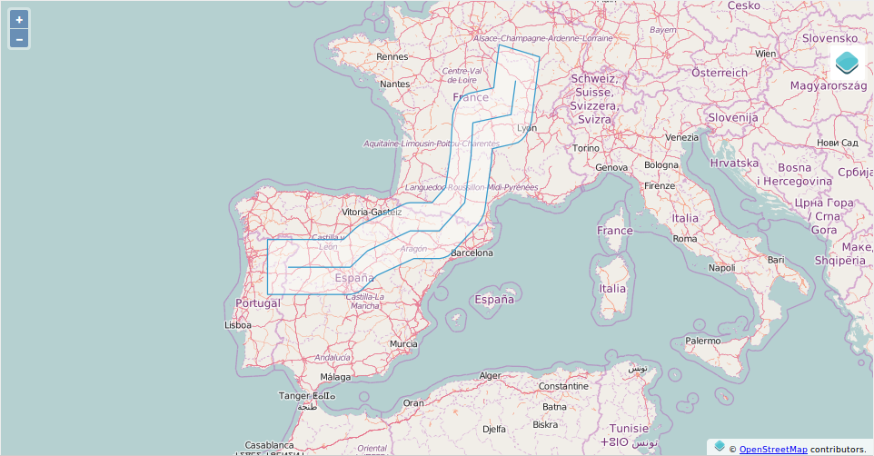</a>
</script></section><section data-markdown><script type="text/template">
## Vector processing with Turf


</script></section></section><section ><section data-markdown><script type="text/template">
# Ecosystem
</script></section><section data-markdown><script type="text/template">
## A growing ecosystem

There are various ways to create plugins at the moment.

We maintain a repository covering the ecosystem called [awesome-openlayers](https://github.com/webgeodatavore/awesome-openlayers/)

*Protips:*

You may ask why "awesome-...", look at [awesome-vector-tiles](https://github.com/mapbox/awesome-vector-tiles) or [awesome-javascript](https://github.com/sorrycc/awesome-javascript). When you search a programming topic, search in a search engine "awesome-yourprogrammingtopic"

Covering all from this list would not be possible. So, what can you take from the list?
</script></section><section data-markdown><script type="text/template">
## With frameworks or frameworkless?

You mainly have choices between:

* Angular based solutions
* React based solutions
* GeoExt based solutions
* Vanilla JavaScript or jQuery based solutions (we consider them as frameworkless)

More or less intrusive frameworks. Choices depend of skills and team/developers personalities.
</script></section><section data-markdown><script type="text/template">
## The "no-code approach" with Desktop GIS to OpenLayers 3

* [qgis2web](https://github.com/tomchadwin/qgis2web) Export from QGIS to various web mapping library including OpenLayers (a Desktop GIS software)
* [Web App Builder](http://boundlessgeo.com/2015/06/building-openlayers-3-web-app-without-writing-code/)
</script></section><section data-markdown><script type="text/template">
## One example for inspiration

One of the most impressive is [OL3-ext](http://viglino.github.io/ol3-ext/) for its variety.

<a href="http://viglino.github.io/ol3-ext/"></a>
</script></section></section><section ><section data-markdown><script type="text/template">
# References
</script></section><section data-markdown><script type="text/template">
## Official

* [Official website](http://openlayers.org)
* [Examples](http://openlayers.org/en/master/examples/)
* [API documentation](http://openlayers.org/en/master/apidoc/)
* [Workshop](http://openlayers.org/workshop/)
* [Custom builds](https://github.com/openlayers/builder)
</script></section><section data-markdown><script type="text/template">
## Books

* [OpenLayers 3 Beginner’s Guide](https://www.packtpub.com/web-development/openlayers-3-beginner%E2%80%99s-guide) by Thomas Gratier, Paul Spencer & Erik Hazzard and [code samples](http://openlayersbook.github.io)) (January 2015)
* [The book of OpenLayers 3 - Theory and Practice](https://leanpub.com/thebookofopenlayers3) with [code samples](http://www.acuriousanimal.com/thebookofopenlayers3/) by Antonio Santiago Perez
* [Mastering OpenLayers 3](https://www.packtpub.com/web-development/mastering-openlayers-3) by Gábor Farkas (January 2016)
* [OpenLayers 3.x Cookbook - Second Edition](https://www.packtpub.com/web-development/openlayers-3x-cookbook-second-edition) by Peter J. Langley, Antonio Santiago Perez (March 2016)

</script></section></section><section  data-markdown><script type="text/template">
# Questions
</script></section></div>
        </div>

        <script src="lib/js/head.min.js"></script>
        <script src="js/reveal.js"></script>

        <script>
            function extend() {
              var target = {};
              for (var i = 0; i < arguments.length; i++) {
                var source = arguments[i];
                for (var key in source) {
                  if (source.hasOwnProperty(key)) {
                    target[key] = source[key];
                  }
                }
              }
              return target;
            }

            // Optional libraries used to extend on reveal.js
            var deps = [
              { src: 'lib/js/classList.js', condition: function() { return !document.body.classList; } },
              { src: 'plugin/markdown/marked.js', condition: function() { return !!document.querySelector('[data-markdown]'); } },
              { src: 'plugin/markdown/markdown.js', condition: function() { return !!document.querySelector('[data-markdown]'); } },
              { src: 'plugin/highlight/highlight.js', async: true, callback: function() { hljs.initHighlightingOnLoad(); } },
              { src: 'plugin/notes/notes.js', async: true, condition: function() { return !!document.body.classList; } },
              { src: 'plugin/math/math.js', async: true }
            ];

            // default options to init reveal.js
            var defaultOptions = {
              controls: true,
              progress: true,
              history: true,
              center: true,
              transition: 'default',
              dependencies: deps
            };

            // options from URL query string
            var queryOptions = Reveal.getQueryHash() || {};

            var options = {};
            options = extend(defaultOptions, options, queryOptions);
            Reveal.initialize(options);
        </script>
    </body>
</html>

